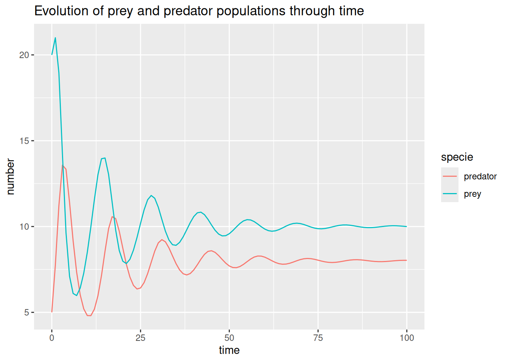
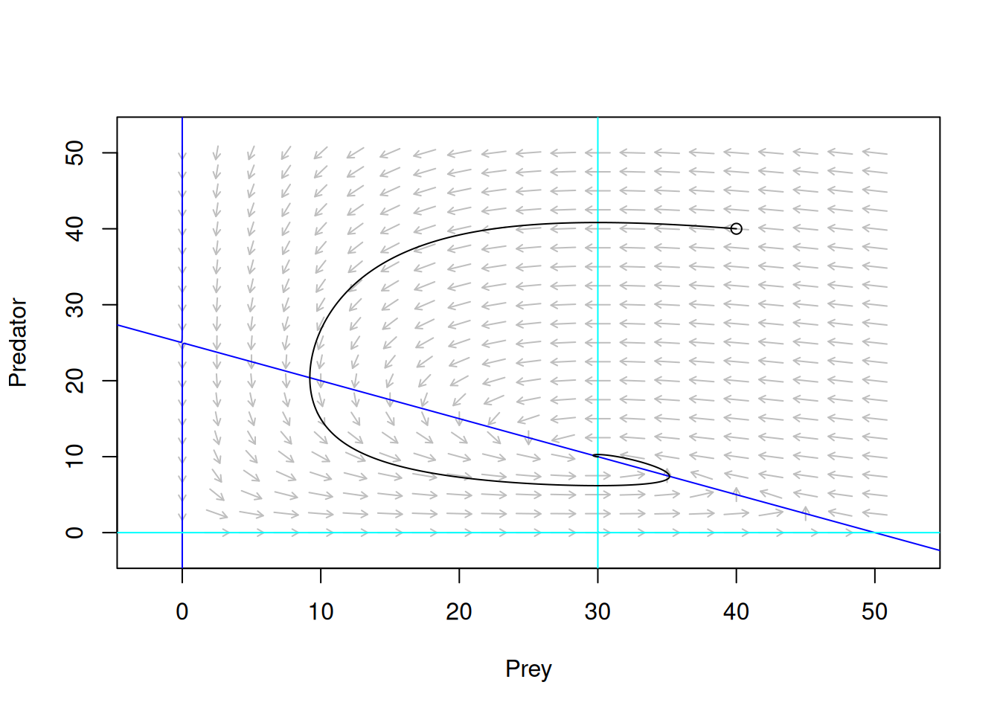
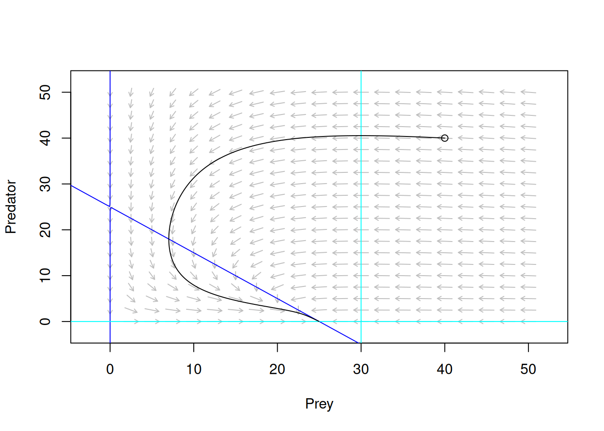
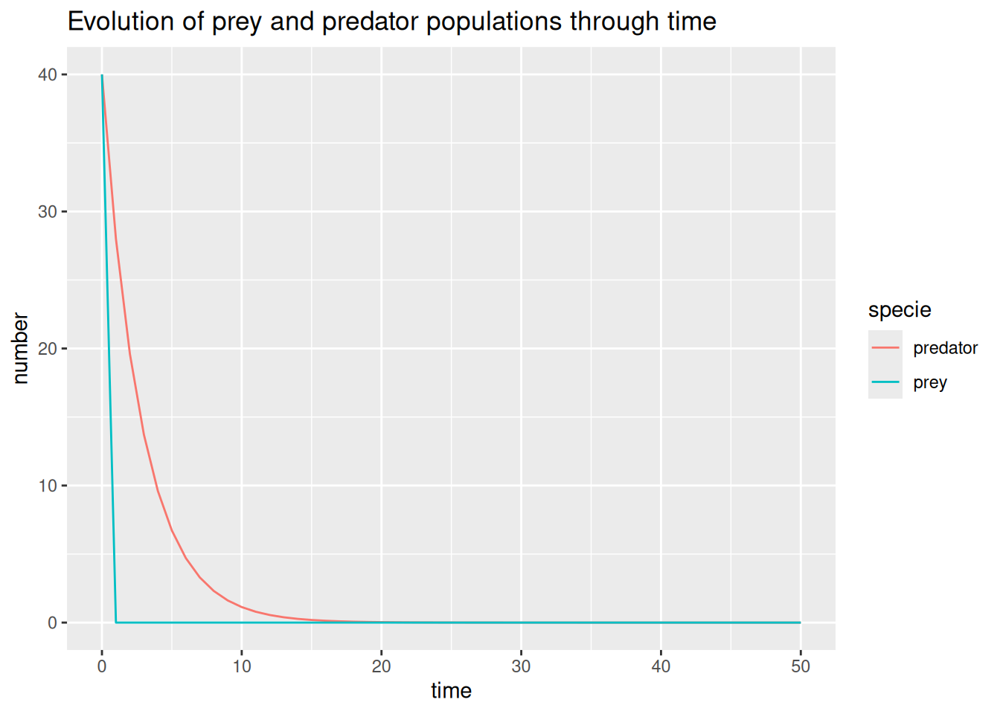

## Packages
suppressPackageStartupMessages({
library(ggplot2)
library(dplyr)
library(tidyr)
})EDO prédation
MAIN QUESTION : How can we model the evolution of the dynamics between lynxes and hares ?
INTRODUCTION :
When having a dynamic system modeled by an Ordinary Differential Equation (ODE), we usually can’t find a mathematical solution. Thus, we have 2 options : a numerical approach and a qualitative one. Here, we will focus on the latter, that is to say qualitatively predict the evolution (in terms of behavior) of N(t) (the number of the population at time t), in particular asymptotically.
Looking at lynx and hare pelts from the Hudson’s Bay Company’s (fur-collecting) trappers’ hunts over a 90-year period, we see that the number of hare and lynx pelts is correlated. If we assume that the number of pelts collected is proportional to the total population, then we arrive at the conclusion that the hare and lynx population is correlated with a phase shift of a few years for the lynx (Elton & Nicholson, 1942).
What is the intuition behind this? Lynxes need hares to survive, and so the lynx population can only grow if the hare population grows. There’s a time lag: when the lynx population is low, the hare population begins to grow. The lynxes then begin to have food again, and will then grow again and begin to massacre a large part of the hare population, only to run out of food. Then the cycle begins again.

Logistic Prey-Predator model (in a limited environment) :
\[ \begin{cases} \frac{dN}{dt}=r_1N(1-\frac{N}{K})-b_1NP \\ \frac{dP}{dt}=-r_2P+b_2NP \end{cases} \]
The parameters are the following ones (they are all positive :) ) :
| Parameters | Meaning |
|---|---|
| \(r_{1}\) | growth rate of preys’ population |
| \(r_{2}\) | death rate of predators’ population |
| \(b_{1}\) | predation efficiency |
| \(b_{2}\) | predation yield |
| \({K}\) | biotic capacity |
In such conditions, we expect the populations dynamics to evolve in different ways according to parameters value and initials conditions (the size of both population). We can relatively easily assume that a big predator’s population paired with a high predation efficiency would lead prey’s population to go extinct and, shortly after, predator’s population is expected to follow the same dynamic. The question we may now ask ourselves is the following :
How would the system evolve according to parameters and initials conditions variation?
This is where qualitative analysis steps in. But first let’s do a little bit of math.
Equilibrium points and isoclines
Let’s start with a bit of vocabulary, in qualitative analysis we call equilibrium points all values of N for which the derivative is 0. Mathematically it’s expressed as following : \[ \frac{dN}{dt}=0\;\Longleftrightarrow\;f(N^{*})=0 \\ \]
\[ \text{with}\;\ \frac{dN}{dt}=f(N) \]
For equation system such as Lotka-Volterra it would be as following : \[ \begin{cases} \frac{dN_{1}}{dt}=0 \\ \frac{dN_{2}}{dt}=0 \end{cases} \;\Longleftrightarrow\; \begin{cases} f_{1}(N1^{*},N2^{*})=0 \\ f_{2}(N1^{*},N2^{*})=0 \end{cases}\\ \]
\[ \text{with}\;\ \begin{cases} \frac{dN_{1}}{dt}=f_{1}(N1,N2) \\ \frac{dN_{2}}{dt}=f_{2}(N1,N2) \end{cases} \] Those equilibrium points carry the information about the population sizes at which the system does not change. They can be either locally asymptotically stable (LAS), unstable (repeller) and in the case the system has more than one differential equation, saddle points may appear. Around LAS points, system will go towards the equilibrium, around repeller points, system will tend to move away from equilibrium. As for saddle points, depending on the area the system will go toward or away the equilibrium
In contrast to equilibrium points, where all derivative must be equal to zero, isoclines correspond to lines for which an equation of the system is individually equal to zero. Mathematically it’s expressed as following :
\[ *\text{Isoclines $N_{1}$ :} \\ \frac{dN_{1}}{dt}=0 \;\Longleftrightarrow\; f_{1}(N1,N2)=0 \\ \]
\[ \text{Isoclines $N_{2}$ :}\\ \frac{dN_{2}}{dt}=0\;\Longleftrightarrow\; f_{2}(N1,N2)=0 \\ \]
\[ \text{With}\;\begin{cases} \frac{dN_{1}}{dt}=f_{1}(N1,N2) \\ \frac{dN_{2}}{dt}=f_{2}(N1,N2) \end{cases} \]
Plotting those isoclines on a phase plane allows us to identify some areas where the system may evolve in different ways. We can then examine the behavior of each population in the previously defined area , allowing to characterize the system overall behavior.
All of that is analytically calculable for some systems of differential equation system (including Lotka-Volterra logistic), but lazy as we are, we will focus on numerically approximate those solutions.
Numerical approximation of equilibrium points and phase plane
The first step to numerical approximation of equilibrium points and drawing a phase plan is to define the function, following the syntaxe below. We also define some parameter values for our function.
Proiepred<- function(t, y, parameters) {
# Here we define the initial condition from the vector
# The order of initial condition must be the following : y=c(prey,predator)
N <- y[1]
P <- y[2]
# Here we define the parameter from the vector
# The order must be the following : parameters=c(r1,r2,b1,b2,K)
r1 <- parameters[1]
r2 <- parameters[2]
b1 <- parameters[3]
b2 <- parameters[4]
K <- parameters[5]
# On implémente nos équations différentielles
dPop <- numeric(2)
dPop[1] <- r1*N*(1-N/K) - b1*N*P
dPop[2] <- - r2*P + b2*N*P
list(dPop)
}
#On définit nos paramètres
parameters1 <- c(r1 = 0.5, r2 = 0.3, b1 = 0.02, b2 = 0.01,K=50)Now that the function is defined, we can use the package ‘phaseR’ to draw a phase plan and draw the isocline using function flowField and nullclines.
# Loading the library
library(phaseR)
# Defining the limit for the studied window by flowField
xlim <- c(0, 50)
ylim <- c(0, 50) # Generating a phase plan for our equation
flowField(
deriv = Proiepred,
xlim = xlim,
ylim = ylim,
parameters = parameters1,
system="two.dim",
add=FALSE,
tend=100, xlab="Prey", ylab="Predator"
)
# Generating the isoclines for our equation
nullclines(Proiepred,xlim=c(-10,100),ylim=c(-10,100),parameters = parameters1, points = 500,add.legend = FALSE,add = TRUE)
trajectory(Proiepred,y0=c(40,40),tlim=c(0,100),parameters=parameters1)
simul_traj(N_0= 40,
P_0= 40,
t_end= 50,
pas= 1,
r1= 0.5,
b1= 0.02,
r2= 0.3,
b2= 0.01,
K= 50)
From this graphic we could already interpret the isoclines and the equilibrium point. We can also use the function findEquilibrium to discuss those equilibrium points. We can approximate the equilibrium points from the graphic, looking at the intersect of isoclines.
# Approximating the equilibrium point around the isocline intersection at (0,0)
eq0 <- findEquilibrium(Proiepred, y0 = c(N=0, P=0), parameters = parameters1)
# Approximating the equilibrium point around the isocline intersection at (30,15)
eq1 <- findEquilibrium(Proiepred, y0 = c(N=30, P=15), parameters = parameters1)
# Approximating the equilibrium point around the isocline intersection at (50,0)
eq2 <- findEquilibrium(Proiepred, y0 = c(N=50, P=0), parameters = parameters1)$eq0_classification
[1] "Saddle"
$eq1_classification
[1] "Stable focus"
$eq2_classification
[1] "Saddle"We can now see that there is three equilibrium points for the Lotka-Volterra logistic function, two of them are saddle : (0,0) , (50, 0). The equilibrium points at (30,10) is a stable point, both population will tend to stabilize around the third equlibrium point as time goes on.
We may now question ourselves, what is the impact of initial parameters for our system?
Let’s repeat the process but with different parameters values :)
# Defining the limit for the studied window by flowField
parameters2 <- c(r1 = 0.5, r2 = 0.3, b1 = 0.02, b2 = 0.01,K=25)
xlim <- c(0, 50) # N
ylim <- c(0, 50) # P
flowField(
deriv = Proiepred,
xlim = xlim,
ylim = ylim,
parameters = parameters2,
system="two.dim",
add=FALSE,
tend=100, xlab="Prey", ylab="Predator"
)
nullclines(Proiepred,xlim=c(-10,100),ylim=c(-10,100),parameters = parameters2, points = 500,add.legend = FALSE,add = TRUE)
trajectory(Proiepred,y0=c(40,40),tlim=c(0,100),parameters=parameters2)
simul_traj(N_0= 40,
P_0= 40,
t_end= 50,
pas= 1,
r1= 0.5,
b1= 0.02,
r2= 0.3,
b2= 0.01,
K= 25)
After changing the parameter values, it now appears that there is only two equilibrium points! But what about their stability?
eq0 <- findEquilibrium(Proiepred, y0 = c(N=0, P=0), parameters = parameters2)
eq1 <- findEquilibrium(Proiepred, y0 = c(N=25, P=0), parameters = parameters2)$eq0_classification
[1] "Saddle"
$eq1_classification
[1] "Stable node"The equilibrium point at (0,0) is still a saddle point, both population aren’t supposed to go extinct. But the second equilibrium point changed a lot, it is a saddle point, with predator going towards extinction.
What truly change here?
When going from the first set of parameters to the second we changed a ratio, we went from r2 < K*b2 to r2>K*b2. Phrased differently, we went from a situation where the natural loss in predator population was less than what is gained if the prey population is at the maximum of environmental capacity to a situation where the natural loss exceeds the gain.
When doing numerical approximation of a system, it is important to consider the variation induced by the parameters values. In order to do so, the best way remain the analytic approach.
Bonus : We lied !! In the end, for those who are interested, we are going to describe the analytic approach.
To do so, we will introduce the Jacobian Matrix (Fun Fact : it was named after Carl Gustav Jacobi, an important 19th century mathematician who added huge contributions to the field of linear algebra).
This matrix is composed of the first-order partial derivatives of a multivariable function. The formula for the Jacobian Matrix is the following :
\[ \begin{equation} Jac(N_1, N_2) = \begin{pmatrix} \frac{\partial f_1}{\partial N_1} & \frac{\partial f_1}{\partial N_2} \\ \frac{\partial f_2}{\partial N_1} & \frac{\partial f_2}{\partial N_2} \end{pmatrix} \end{equation} \]
In contrast with the previous part where we had 2 equations, here we have 4 terms in the matrix, in particular 4 partial derivatives. After finding the fixed points, by resolving the equations detailed in the first part, now we can easily replace the values of \(N1^{*}\) and \(N2^{*}\) in the Jacobian Matrix and then study the stability of the fixed points.
In the analytic approach, the stability of a fixed point (\(N1^{*}\), \(N2^{*}\)) is related to the signs of the real parts of the eigenvalues of \(Jac(N1^{*},N2^{*})\):
(\(N1^{*}\), \(N2^{*}\)) is locally asymptotically stable (LAS) if all its eigenvalues are (with real parts) <0
(\(N1^{*}\), \(N2^{*}\)) is unstable otherwise, including:
repulsor if all eigenvalues are (with real parts) >0
saddle point if some eigenvalues are (with real parts) <0 and the others (with real parts) >0.
Because the matrix \(Jac(N1^{*},N2^{*})\) is of dimension 2, it has exactly two eigenvalues and we can calculate the Trace (sum of the eigenvalues ) and the Determinant (product of the eigenvalues) of the Jacobian Matrix which will help us to determine the stability of the fixed points. If a Jacobian Matrix is defined as followed :
\[ \begin{equation} Jac(N_1^*, N_2^*) = \begin{pmatrix} a & b \\ c & d \end{pmatrix} \end{equation} \]
The Trace and the Determinant correspond to : 𝑇𝑟𝑎𝑐𝑒 = 𝑎 + 𝑑 and 𝐷𝑒𝑡 = 𝑎𝑑 − 𝑏𝑐.
In particular,
- (\(N1^{*}\), \(N2^{*}\)) is locally asymptotically stable (LAS) if Trace <0 and Det >0.
- (\(N1^{*}\), \(N2^{*}\)) is repulsor if Trace > 0 and Det >0.
- (\(N1^{*}\), \(N2^{*}\)) is saddle point if Det < 0 (whatever the Trace).
Let’s apply the analytic approach to the logistic Prey-Predator Model, shall we ?
Our system admits 3 fixed points : (\({0}\),\({0}\)), (\({K}\),\({0}\)) and (\(N^{*}\), \(P^{*}\)) where : \[ (N^*, P^*) = \left( \frac{r_2}{b_2},\; \frac{r_1}{b_1} \left( 1 - \frac{r_2}{b_2 K} \right) \right) \]
After calculating the partial derivatives in the Jacobian Matrix :
\[ \begin{equation} Jac(N,P) = \begin{pmatrix} (r_1(1 - \frac{N}{K})-b_1P)-r_1\frac{N}{K} & -b_1N \\ b_2P & -r_2 + b_2N \end{pmatrix} \end{equation} \]
Now we can obtain a Jacobian Matrix for each fixed point :
\[ \begin{equation} Jac(0,0) = \begin{pmatrix} r_1 & 0 \\ 0 & -r_2 \end{pmatrix} \end{equation} \]
For the first one, we can easily determine the eigenvalues because it is a diagonal matrix, so the eigenvalues are on the diagonal. \({r_1}\) > 0 and \({-r_2}\) <0, so (\({0}\),\({0}\)) is a saddle point.
\[ \begin{equation} Jac(K,0) = \begin{pmatrix} -r_1 & -b_1K \\ 0 & -r_2 + b_2K \end{pmatrix} \end{equation} \]
Here, we have a triangular matrix, so the eigenvalues are also on the diagonal. \({-r_1}\) < 0 and \({-r_2 + b_2K}\) < 0 if \({r_2}\) > \({b_2K}\) which makes (\({K}\),\({0}\)) a LAS and a saddle point otherwise.
For the last fixed point (\(N^{*}\), \(P^{*}\)), \(r_1(1 - \frac{N^{*}}{K})-b_1P^{*}\) = 0 (see the definition of the isocline \(N\) : \(\frac{dN}{dt} = 0\) ) because \({N^{*}}\) is different from 0.
Thus, the last Jacobian matrix is written as :
\[ \begin{equation} Jac(N^{*},P^{*}) = \begin{pmatrix} -r_1\frac{N^{*}}{K} & -b_1N^{*} \\ b_2P & 0 \end{pmatrix} \end{equation} \]
Finally, when calculating the trace and the determinant (see the definitions above), we find a negative trace and a positive determinant for \(N^{*}\) and \(P^{*}\) positive. So, (\(N^{*}\), \(P^{*}\)) is a LAS when it interests us.
CONCLUSION :
Through this work, we presented a way to qualitatively analyse the dynamics of a Logistic Prey-Predator Model. Depending on the values of the parameters of the ODE, the nature of the fixed points changes and so the trajectories of the size of the populations do. We identified 3 main situations : the total extinction of both populations (unstable because the lower presence of prey allows the population to grow), survival of prey only at their capacity limit K (stable or unstable depending on the capacity of the predators to persist thanks to the potential gains) and the stable coexistence of the 2 species that only exists if predators can maintain themselves. To summarize, the dynamics of the model illustrate both the mutual dependence and ecological regulation between prey and predator.
As a doorway, we could also be interested in qualitatively predicting the solution of a system of more than 2 equations that could model more complex phenomenon (like epidemiological models SIR or SEIR). The definitions of LAS and unstable (repulsor and saddle points) would remain valid but the calculations would be more complicated. Also, we would look at the Routh-Hurwitz criteria in addition of the trace and the determinant and the representation of isoclines and field portraits would be less obvious.